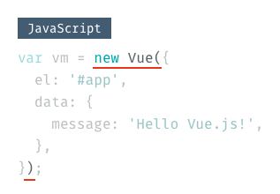
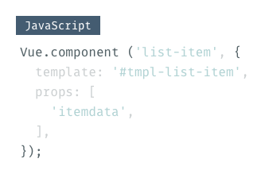

Vue.jsを始めるにあたっての基礎知識的なこと（公式ドキュメントの「はじめに」に相当）を丁寧な感じにまとめてみました。
簡単なVue.jsのコードであれば、書いてることがなんとなく理解できるようになれる想定です。
筆者についてですが、
- Vue.jsを使って「とあるゲーム」用のツールをつくってみた上での所業。
- JavaScriptを雰囲気で書いている（あまりゴリゴリなのは書けない）。
- ReactやAngularなどの他のフレームワークは使ったことがない（強いていうと、Riot.jsをちょっとお触りした）。
- ES6？ なにそれおいしいの？
という感じなので、「Vue.js、ﾁｮｯﾄﾃﾞｷﾙ」という方は優しくまさかり投げてくださると……
また、この記事を開いたということは、Vue.jsに興味をお持ちだと思うので、Vue.jsについての説明は省きます。
Vue.jsのインストール
Vue.jsのインストールについては、「インストール — Vue.js」に書かれていますが、WebpackとかCLIとか準備しているとそこで挫折してしまうため、JSFiddleやCodePenなどのオンラインコードプレイグラウンドを使いましょう。（JavaScriptの設定で、Vue.jsの読み込みを忘れずに！）今回のサンプルはCodePenへリンクをしています。
手慣れたエディタを使いたい場合は、script要素にCDNのアドレスを指定して利用しましょう。面倒ですが、エディタで書いてコピペするという手もあります。
バインディング
では早速、文字を表示するところから始めてみます。（ちなみに、コードは公式ドキュメントとほぼ同じです…）
<div id="app">
<p>{{ message }}</p>
</div>var vm = new Vue({
el: '#app',
data: {
message: 'Hello Vue.js!',
},
});
サンプルコードには、適当なCSSを書いていますが、直接関係するもの以外は解説していません。
HTMLの設定
div要素のid属性は、Vue.jsを実行する要素を指定するために必要で、今回はappとしました。要素はdiv以外でも構いません。
p要素にある{{ message }}は、JavaScript側のデータを流し込むための「枠」を設定しています。{{}}は最も基本的なテンプレート構文で、JavaScript側で設定された値を{{}}部分へ展開します。
JavaScriptの設定
続いてJavaScriptです。1行目のnew Vue()は、Vueインスタンスを作成する命令です。

これは、HTMLやJavaScriptで記述した設定を元に、Vue.jsが実際に動くアプリケーションに処理して起動する「合図のようなもの」と考えてください。この処理を「インスタンス化」といい、処理して作成されたものを「Vueインスタンス」といいます。
ちなみにvar vm =の部分は、インスタンスをVue.jsの外から操作するために定義しているだけですので、なくても動きます。
elは、HTML側でVue.jsを展開する場所（id）を指定します。idを表す#を忘れずに。
dataは、文字通りVue.js内で使うさまざまなデータをする場所です。
今回は、messageという名前の変数へ、値Hello Vue.js!を設定しています。
実行するとHTMLの{{ message }}の部分へ、JavaScript側にあるmessageの値Hello Vue.js!が展開されます。
ここまで解説したelやdataは、Vue.jsのAPIと呼ばれるもので、Vue.jsを扱う上での規格のようなものです。用意されているAPIを使って、さまざまな処理を記述します。
new Vue({})の直下にあるものはAPIと思ってだいたい間違いないです。
バインディングを試す
ここまでの解説では、単純にJavaScriptで設定した文字をテンプレートに入れ、ブラウザでレンダリングしただけにみえます。
CodePenのウィンドウ左下にある［Console］ボタンから、CodePenのConsoleを開いてください（ブラウザのDevToolのほうが使いやすければそちらでもOKです）。
>の表示に続きvm.message = 'Hi! Vue.js!'←をコピペしEnterキーで実行してみましょう（Hi! Vue.js!は適当に変えOKです）。

「Hello Vue.js!」が「Hi! Vue.js!」に変わったでしょうか？

コンソールで実行したコードは、dataにあるmessageの値の書き換えを行うものでした。Vue.jsでは、このようにJavaScriptの値が書き変わると関連するHTMLの表示の書き換えを行います。
仕組みとしては、Vueがインスタンス化するときに、JavaScript側の変数とHTML側の{{}}を関連付け（バインディング）します。

ここでは単に文字を書き換えただけですが、計算した結果を表示をしたり要素の表示を切り替えたりと、用途に応じてさまざまなことが実現できます。
Methods
続いて、methodsというAPIの解説をします。簡単にいうとVue.js内の関数で、data内の値を変更したり計算や文字列の連結をしたりと、さまざまな処理を記述する部分です。
ボタンを押すとclass属性の値を書き換える、という処理で解説します。
<div id="app">
<p v-bind:class="messageStyle">Hello Vue.js!</p>
<button v-on:click="changeClass()">
class属性を変更する
</button>
</div>var vm = new Vue({
el: '#app',
data: {
messageStyle: 'before',
},
methods: {
changeClass: function() {
this.messageStyle = 'after';
}
},
});
.before { color: #4DC295; }
.after { color: #445C71; }HTMLの設定
p要素には、v-bind:class="messageStyle"という属性が設定されています。これをよく見ると、class属性にv-bindがくっついていることがわかります。
このv-bindは、1つ前に説明した{{}}と同じで、class属性の値をmessageStyleでバインディングする処理です。前の解説からするとclass="{{ messageStyle }}"と書きたいところですが、実は{{}}で書けるのはHTMLの要素内に限られるため、属性値をバインディングしたい場合はv-bindを使います。
button要素には、見慣れない属性のv-on:click="changeClass()"が設定されています。
これは、ボタンを押した時のアクションを設定しています。p要素のv-bind:classと同じように、こちらもv-onとclickで構成されています。
v-onは、ユーザの操作（イベント）を検知するもので、今回はclickと組み合わせているので、クリックイベントを監視します。設定した要素にクリックイベントが発生したら、値として設定しているchangeClass()が実行されます。
ここでv-がついた属性を2つ紹介しましたが、このv-がつく属性を「ディレクティブ」と呼びます。Vue.jsがインスタンス化する際に、HTMLへ処理を追加する目印のようなものです。
最初のv-でVue.jsに「何をさせるか」、:に続いてその対象とする属性、そして属性値として関数や変数などを指定します。
JavaScriptの設定
JavaScriptでは、メッセージ部分のclass属性に使うmessageStyleをdataへ追加し、デフォルトとしてbeforeが設定されるようにしています。
続いてはmethodsです。HTMLで説明した、クリックイベントが発生した時に実行する関数changeClassを設定しています。
function()に続く{}で括られている部分が具体的な処理内容です。今回はafterクラスを適用するため、this.messageStyle = 'after';としています。
messageStyleにthisが付いていますが、methods中でVueインスタンスの関数や変数を使うときは、thisをつける必要があります。このthisはVueインスタンス自身を指しており、つまりは自分の中の関数や変数を使いますよ、ということを明示しているような感じです。
CSSの設定
CSSはクラスがきちんと入れ替わっているかの確認用で、それぞれで文字の色を変えています。
以上を実行し、［class属性を変更する］ボタンを押してみましょう。文字の色が変わったでしょうか？ ブラウザのDevToolでも、class属性が変わっていることが確認できます。
v-if
v-ifは、その名の通り「条件分岐」です。条件にマッチした場合、v-ifを設定している要素をレンダリングします。マッチしなかった場合は、要素そのものが存在しなくなります。
そのv-ifを使って、ボタンを押すと表示されるポップアップを作成してみます。
<div id="app">
<button v-on:click="showPopup()">ポップアップを表示</button>
<div v-if="popupState">
<p>{{ message }}</p>
<button v-on:click="closePopup()">閉じる</button>
</div>
</div>var vm = new Vue({
el: '#app',
data: {
message: 'Popup',
popupState: false,
},
methods: {
showPopup: function() {
this.popupState = true;
},
closePopup: function() {
this.popupState = false;
}
}
});
HTMLの設定
HTMLでは、ポップアップを表示するためのボタンと、そのポップアップの要素にメッセージとポップアップを閉じるボタンを配置しています。
［ボップアップを表示］ボタンでは、クリックしてポップアップを表示するため、v-on:clickにshowPopup()を設定しています。
ポップアップのdiv要素にはv-ifを設定しています。このv-ifはpopupStateの値を確認し、trueであればこのdiv要素を描画、falseであれば描画そのものがされません。
ポップアップ内では、メッセージを変更できるようにmessageをバインディングしました。［閉じる］ボタンでは、v-on:clickでclosePopup()を実行し、クリックしてポップアップを閉じます。
JavaScriptの設定
JavaScriptでは、dataへmessageとpopupStateを設定しました。
messageは、ポップアップで表示するメッセージです。
popupStateは、ポップアップを表示するかどうかのステータスを設定します。真偽値trueまたはfalseが入り、初期値を「false＝表示しない」に設定しています。
methodsでは、showPopup()とclosePopup()の2つを設定しています。メソッドの名前は違いますが、実行している内容はほぼ同じで、popupStateの値を「true＝表示する」にするか「false＝表示しない」にしないかの差です。
このコードを実行しブラウザのDevToolで見ると、v-ifを設定した要素がないことが確認できます。「ポップアップを表示」ボタンを押すと要素が生成され、さらに「閉じる」ボタンを押すと要素が削除されます。
v-show
条件にマッチした場合、要素を表示するディレクティブです。v-ifと似ていますが、こちらは要素のstyle属性でdisplay: none;の付加および除去を行います。ブラウザ上での表示結果は同じですが、非表示時にHTML上へ要素が存在するか否かが異なります。
v-ifで使ったコードをそのまま流用し、v-ifをv-showに変更します。
<div id="app">
<button v-on:click="showPopup()">ポップアップを表示</button>
<div v-show="popupState">
<p>{{ message }}</p>
<button v-on:click="closePopup()">閉じる</button>
</div>
</div>var vm = new Vue({
el: '#app',
data: {
message: 'Popup',
popupState: false,
},
methods: {
showPopup: function() {
this.popupState = true;
},
closePopup: function() {
this.popupState = false;
}
}
});
これを実行し開発者ツールでみると、v-showを設定したdiv要素にstyle="display: none;"が付加されていることがわかります。「ポップアップを表示」ボタンを押すと、display: none;が取り除かれ、ポップアップが表示されます。
同じようなことができるv-ifとv-showですが、v-ifは要素の生成が行われるため、高いコストがかかり、v-showはCSSの切り替えのみのため高い「描画」コストがかかります。状態があまり変化しない場合はv-ifを、頻繁に切り替える必要があればv-showを使いましょう、と公式ドキュメントに書かれています。
また今回は解説していませんが、v-ifでは条件にマッチしなかった場合の処理として、v-elseとv-else-ifのディレクティブが使えます（公式ドキュメント）。
v-for
v-forは繰り返しの処理で、同じ構成の要素を連続して作成するといった場合に使用します。
例えば、日付とタイトルで構成されたニュース記事のリストや、アプリのタイトルやアイコン・レビューといった複雑な構成のカードUIの一覧など、同じ要素が繰り返し使われているパターンは多くあります。
ここでは、簡単にニュース記事のリストを作成してみます。
<div id="newsList">
<ul>
<li v-for="news in newsContents">
<datatime>{{ news.date }}</datetime>
<a href="news.url">
{{ news.title }}
</a>
</li>
</ul>
</div>var vm = new Vue({
el: '#newsList',
data: {
newsContents: [
{date: '1988.9.30', url: 'https://example.com/news/1', title: 'News Title1',},
{date: '1989.9.16', url: 'https://example.com/news/2', title: 'News Title2',},
{date: '2005.9.21', url: 'https://example.com/news/3', title: 'News Title3',},
]
}
});
HTMLの設定
今回の例では、v-forが設定されているli要素が繰り返し生成されます。datetime要素で日付を、a要素にタイトルとそのリンク先が設定されます。
v-forは、その属性で『「v-for内で使う変数名」in「配列データ」』という形で繰り返しを指定します。
v-forの処理が始まると、1回の処理後ごとにnewsの中へnewsContentsのデータが1行ずつ（今回の場合{}の単位）入ります。
入ったデータの構成がObject（key: velueという形式）の場合、news.keyという形式で、ドット区切りで中のデータにアクセスできます。
この辺り？？の方は「JavaScript 配列 オブジェクト」ぐらいで、Google先生に聞いてみてください。
JavaScriptの設定
JavaScriptでは、data内にv-forで使うnewsContentsという配列を作成しています。
以上を実行すると、ul要素でマークアップされたリストが表示されます。
単にテンプレートに流し込んだだけのように見えますが、実はデータがきちんとバインディングされており、newsContentsの配列数に合わせて要素も増減します。Consoleでvm.newsContents.push({date: '2005.9.21', url: 'https://example.com/news/4', title: 'News Title4',})で配列を追加すると、ul要素へli要素が追加されることがわかります。
一般的なウェブサイトで使うことは稀だと思いますが、単に要素を繰り返して生成するだけではないということは頭の片隅に置いておくといいかもしれません。
Component
Componentは、特定の機能をまとめた部品です。アプリやウェブページはさまざまな部品を組み合わせてできていますが、その部品をComponent化することで、再利用性やメンテナンス性が向上します。
例えば、「リスト項目がチェックボックスと項目名で構成されたToDoリスト」であれば、リスト項目をComponent化することで、リストがネストできるようになったとしても、子要素でも再利用ができるようになります。SketchやXDのシンボルを想像してもらうと理解しやすいでしょう。
<script type="text/x-template" id="tmpl-list-item">
<li>
<label>
<input type="checkbox" v-model="itemdata.checked">
{{ itemdata.label }}
</label>
</li>
</script>
<div id="app">
<ul>
<list-item v-for="item in todoData" v-bind:itemdata="item"></list-item>
</ul>
</div>Vue.component ('list-item', {
template: '#tmpl-list-item',
props: [
'itemdata',
],
});
var vm = new Vue({
el: '#app',
data: {
todoData: [
{label: 'ToDo1', checked: false},
{label: 'ToDo2', checked: true},
]
},
});
HTMLの設定
HTMLでは、いきなりscript要素が出てきました。これはComponentの表示部分（テンプレート）を作成する方法の一つで、script要素内の記述をComponentのテンプレートとして使うことができます。script要素といってもJavaScriptを記述する必要はなく、script要素内へこれまでと同じようにHTMLを記述すればOKです。

ただし、type属性にはVue.jsのテンプレートを表すtext/x-templateの指定と、JavaScript側からテンプレートを指定するために使うid属性を設定します。
テンプレートの中にあるinput要素に、新しくv-modelというディレクティブが使われています。これは「双方向バインディング」のためのディレクティブで、主にinput要素とtextarea要素で使います。
「双方向」の名の通り、データと要素間で値を同期します。ユーザーがチェックボックスのオン・オフを切り替えた場合もdata内の値を変更し、data内の値を変更した場合でも、チェックボックスのオン・オフが切り替わります。
JavaScript側の値が変更された場合に、UI側の値も変わるのはv-bindと同じです。しかし、v-bindではUI側の変更を検知できないため、UIのオン・オフを切り替えても、その変更はJavaScript側へ反映されません。
続いてインスタンスが展開するdiv#appの内部をみると、「list-item」という見慣れない要素があります。このカスタム要素部分に、先ほどのscript要素で定義したテンプレートのHTMLが展開されます。list-itemという要素名や細かい動作は、JavaScript側で設定します（後述）。
list-item要素では、繰り返し処理を行うv-forディレクティブの指定と、itemdata属性がバインディングされています。itemdata属性は、指定された値（ここではitem）をテンプレート側へ渡すための属性です（後述）。
JavaScriptの設定
JavaScriptでは、初めにVue.jsへComponentの登録を行うためのVue.component(tagName, options)を記述しています。component()の中で、Componentの振る舞いを設定します。

また、Vue.component()はnew Vue()より前に置いておく必要があります。
Vue.componetでは、まずHTMLで使うためのカスタム要素の名前を指定します。HTML側でも出てきましたが、list-itemという名前にしています。
続けてオプションの指定ですが、templateではテンプレートとして参照するscript要素のidを指定します。
次のpropsは、親のComponentからデータを受け取るためのAPIです。
Componentはその単体で自己完結しており、データを外から自由に受け取ることができません。そこでpropsを使いComponentに「穴」を開けることで、親からのデータを受け取ることができるようになります。
Componentの親子関係は、カスタム要素をどのComponentで使ったかで決まります。今回の場合、list-item要素はVueインスタンスが展開する場所に直接使っているため、Vueインスタンス＝Root Componentが親になります。カスタム要素をテンプレート内で使えば、そのテンプレートを使ったComponentが親です。
作成したカスタム要素で、propsに指定した名前と同じ名前の属性をv-bindすると、Component内へデータを渡すことができます。言い換えれば、事前にprppsへ変数を指定しておかないとComponent内へ持ち込むことはできません。
今回の例では、todoDataの値を渡す必要がありますが、todoDataはv-forで処理されるため、1行ずつのデータがv-forないの変数itemへ値が入り、itemdataとしてカスタム要素の中へ送られます。

次のようにv-bindを複数使い、2つ以上のデータを渡すこともできます。
<!-- 細部は省略 -->
<list-item v-bind:props1="hoge" v-bind:props2="fuga"></list-item>// 細部は省略
props: [
'props1',
'props2'
],
new Vue()以降の部分はこれまでと同様です。
v-modelで値が相互に変更されているかを確認してみる
Consoleで次のスクリプトを実行すると、ToDo1のチェックボックがオンになります。
vm.todoData[0].checked = true;
v-bindと同じく、JavaScript側のデータが変更されると、それに応じてUI側も変わります。
続けて、次のスクリプトを実行し、JavaScript側のデータもtrueであることを念のため確認します。
vm.todoData[0].checked
trueと表示されたら、ToDo1のチェックボックスをオフにしてから、もう一度vm.todoData[0].checkedを実行してみましょう。次はfalseと表示されるはずです。
このように双方向バインディングは、お互いに監視して値を同期します。
以上です。ここまで読んでくださりありがとうございました。
Vue.jsのコードが多少でも読めるようになれば幸いです。今回は本当に基本的な部分のみの解説だったため、もっと詳しく知りたい方は、日本語へ翻訳されている公式ドキュメントをご覧になってください。
ちなみに「とあるゲーム」とは、時間泥棒ことFactorioです。今更ハマって、その計算ツールを作りました（現状では未公開）。みんな、買おう。
Vue.js 使ってみようかなということで、誰の役にも立たないアプリっぽいものがとりあえずできた。 pic.twitter.com/zhn7ZR1FXK
— くっきーさん💎 (@littlebusters) 2018年2月27日